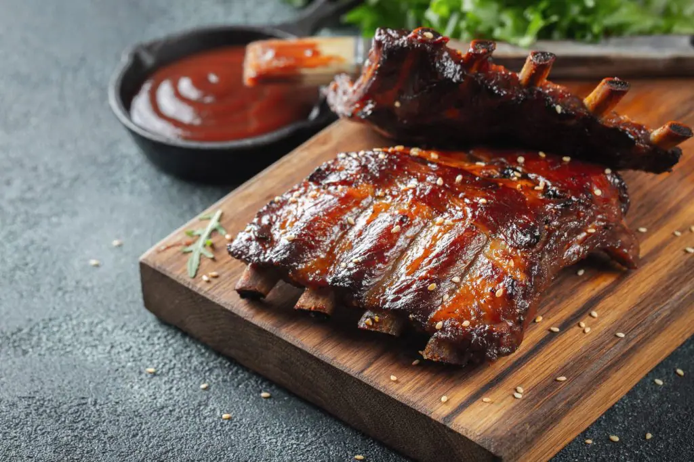
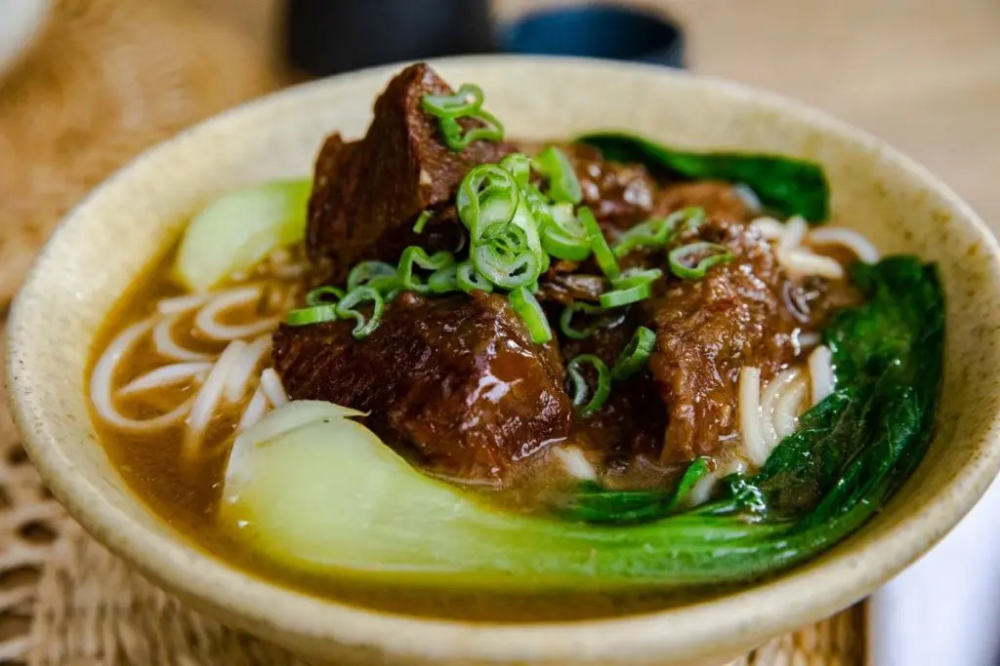
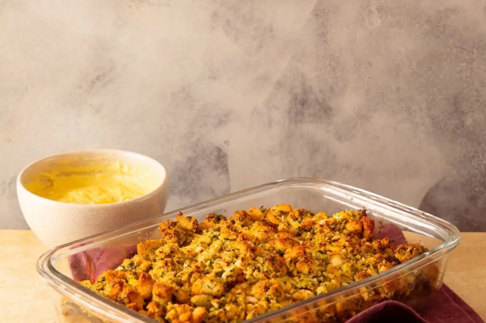
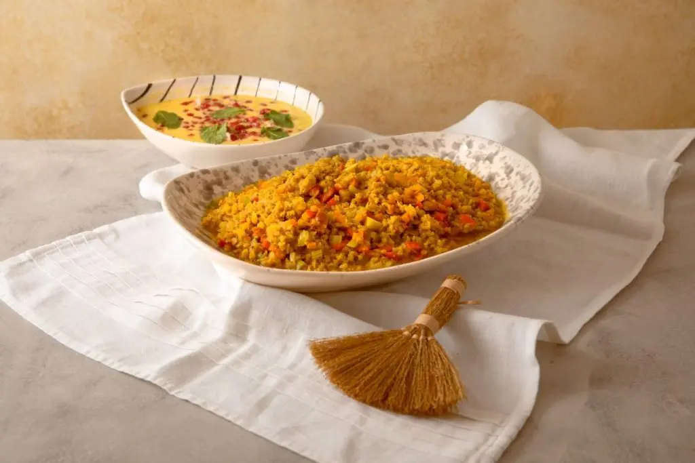

Roulette de lomo
Aprende a preparar esta receta de Roulette de lomo

Ribs de cerdo
Aprende a preparar esta receta de Ribs de cerdo
Gyoza
Aprende a preparar esta receta de Gyoza
Pescado Al Vapor
Aprende a preparar esta receta de Pescado Al Vapor

Sopa De Fideos Con Carne
Aprende a preparar esta receta de Sopa De Fideos Con Carne
Mapu Tofu
Aprende a preparar esta receta de Mapu Tofu
Fideos De Arroz Fresco Salteado
Aprende a preparar esta receta de Fideos De Arroz Fresco Salteado

Vegetales A La Polonesa
Aprende a preparar esta receta de Vegetales A La Polonesa

Curry Veganos De Lentejas
Aprende a preparar esta receta de Curry Veganos De Lentejas